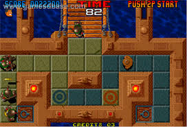
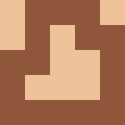
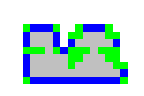
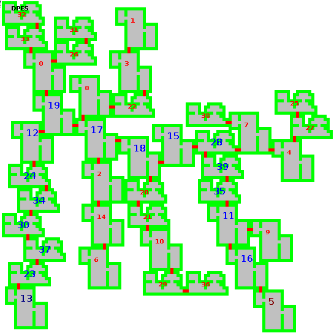
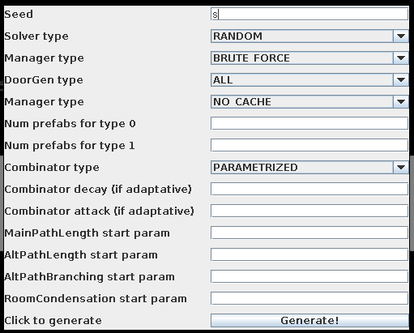

Generación de mazmorras
Análisis e investigación del problema. Acercamiento con búsqueda.
Creado por Alejandro Seguí Díaz
Contexto de la investigación
Videojuegos
Los videojuegos son, a día de hoy, un tipo de mercado líder indiscutible a nivel internacional
Por ello, es bastante conveniente dedicar investigación a este campo
En muchos casos da lugar a desarrollo en otras áreas ajenas a la de los videojuegos
Problema
Muchos géneros de juegos requieren mapas en los que poder dar rienda suelta al jugador para recorrer, investigar y disfrutar
La elaboración de mapas consume recursos de horas/persona
Empresas grandes dedican un equipo completo a esta tarea
La aparición de equipos denominados indies, que se caracterizan por tener bajo presupuesto y personal, hace emerger necesidades relacionadas con cubrir la falta de recursos
Solución
Elaborar un sistema que genere los mapas necesarios para el desarrollo de un videojuego
Conseguimos un ahorro de recursos
Especificaciones
Coordinación
Cada juego tiene sus propias reglas del mundo, y por ende, el sistema a construir debe adaptarse a dichas reglas
Este trabajo se ha elaborado en función de especificaciones impuestas por la empresa indie de videojuegos
Definición del tipo de juego
-
{(lif)El entorno debe ser en {(c)dos dimensiones}}
{(lif)El jugador {(c)comienza en una habitación} y tiene como {(c,b)objetivo}{(c) llegar a una habitación considerada final} para pasar el nivel}
{(lif){(c)Mapa de {(b)tiles}}}
- Vista cenital

Captura de Action Hollywood, publicado por TCH en 1995 para recreativas
Especificaciones para la generación (I)
-
{(lif)Partir de una {(c)lista de {(b)habitaciones previamente creadas}}}
{(lif){(c){(b)Maximizar} el {(b)camino} desde la habitación {(b)de inicio hasta final}}}
{(lif)Fomentar {(c,b)caminos alternativos} para promover que el jugador tenga que investigar}
{(lif)Fomentar la {(c){(b)variabilidad} en la generación de los niveles} de forma que cada jugador tendrá una experiencia distinta}
Especificaciones para la generación (II)
- Cada nivel se generará en el momento que el jugador inicia el mismo
- No importa qué par de habitaciones son la inicial y la final
- Debe funcionar en sistemas móviles, contando con un tiempo de ejecución asequible
State of the art
Procedural content generation
Campo en constante desarrollo con varias subáreas:
- Generación de mapas
- Storytelling procedimental
- Generación de puzles
Representación
Topología de los elementos
La representación física tanto del mapa como de las habitaciones, será una matriz de dos dimensiones
| $\begin{matrix} 0 & 1 & 1 & 1 & 0 \\ 0 & 1 & 0 & 1 & 1 \\ 1 & 1 & 0 & 0 & 1 \\ 1 & 0 & 0 & 0 & 1 \\ 1 & 1 & 1 & 1 & 1 \end{matrix}$ | $\leftrightarrow$ |  |
Habitaciones
Cada habitación se representará como una matriz de dos dimensiones
Las habitaciones contendrán puertas que nos servirán para conectar pares de habitaciones
Debido a que las habitaciones pueden repetirse, se ha optado por una representación dividida en dos componentes:
- Prefab: clase de una habitación
- Instancia: instancia concreta de una habitación
Prefab de habitación
También nos referiremos como clase o modelo.
Contiene la representación física de un modelo de habitación
Se precomputan y guardan las puertas potenciales de una habitación, ya que el cómputo de las mismas es costoso e innecesario, y de esta forma solo se realiza en la carga

Puertas potenciales mostradas como tiles azules
Puertas potenciales
{(pf)¿Cuándo un tile {(c,b)$t(x,y)$} es una {(c,b)puerta potencial}?}
$o(x,y) = outer(x,y)$: tile vacío exterior
$i(x,y) = inner(x,y)$: tile vacío interior
$s(x,y) = solid(x,y)$: tile sólido (pared)
Instancia de habitación
Permite elegir un subconjunto de todas las posibles puertas de un modelo de habitación a partir del conjunto de tiles precomputado en el modelo
Contiene información sobre una instancia de un modelo de habitación:
- Lista de puertas que aún no se han colocadoa
- Lista de puertas que se han colocado
- Posición donde está colocada la habitación en un mapa
Mapa
{(pf)La solución está definida por:}-
{(lif){(c,b)Representación física} empleando una {(c,b)matriz de dos dimensiones} que contiene las habitaciones que han sido colocadas}
{(lif){(c,b)Conexiones entre habitaciones}, empleando una {(c,b)matriz superior} de dos dimensiones}
Estrategia constructiva
Definición
{(pf)Usaremos un {(c,b)método constructivo} para {(c)obtener {(b)una solución}}} {(pf)Construiremos el mapa a partir de {(c,b)movimientos} {(c,b)$M_i(R_i,P_i)$} compuestos por:}-
{(lif){(c,b)$R_i$}: modelo de habitación a colocar}
{(lif){(c,b)$P_i$}: posición del mapa donde se coloca}
Cómputo de posibles movimientos
{(pf)Dado un estado concreto del proceso}-
{(lif)Mapa con una serie de habitaciones colocadas}
{(lif)Lista con habitaciones restantes por colocar}
$$\bigcup_{r \in RR}possibleConnections(map, r)$$
$$RR = remainingRooms$$
Conexiones entre el mapa y una habitación
{(pf)Definición de posibles {(c)conexiones entre el {(b)mapa} y una {(b)habitación}}:}
$possibleConnections(map, r) =$
$\bigcup_{p \in rooms(map)} \left\{ cx(map,r,p,u,v,w) : \neg col(map, r, w) \right\}$
$w = v - u + \begin{cases}
(-1,0) \\
(+1,0) \\
(0,-1) \\
(0,+1) \\
\end{cases}$
$potentialDoor(u, r), potentialDoor(v, p)$
Conexiones entre el mapa y una habitación

Ilustración de posible conexión entre habitación restante y mapa
Construcción del mapa
Interfaz de selección de movimiento
{(pf)Emplearemos una interfaz {(c,b)InterfazSeleccion} que {(c)elegirá un {(b)movimiento} de entre todos los posibles} por cada paso del algoritmo}
interface InterfazSeleccion {
Movimiento ElegirMovimiento( Mapa mapa, List<Movimiento> movimientos );
}
Mapa GenerarMapa( List<Habitacion> habitaciones, InterfazSeleccion mapSolver ) {
Mapa mapa = MapaVacio();
while( !habitaciones.isEmpty() ) {
List<Movimiento> movimientos = GenerarMovimientos( mapa, habitaciones );
Movimiento elegido = mapSolver.ElegirMovimiento( mapa, movimientos );
mapa.InsertarHabitacion( elegido.habitacion, elegido.posicion );
habitaciones.remove( elegido.habitacion );
GuardarMovimiento( elegido );
}
EstablecerRecorridoPrincipal( mapa );
return mapa;
}
Guardado de movimientos
{(pf)Como se puede ver en el pseudocódigo, {(c)se {(b)guarda} la {(b)lista de movimientos} necesaria para {(b)construir el mapa}}} {(pf)La función {(c){(b)IMapSolver::GenerarMovimiento} será el {(b)bottleneck}} de nuestro sistema} {(pf)Para una futura mejora añadiendo {(c,b)backtracking}, puede servirnos para {(c){(b)guardar el estado del mapa} y {(b)reconstruirlo de forma muy rápida}}}Interfaz aleatoria
Propiedades
{(pf){(c){(b)No} tiene {(b)interés computacional}}} {(pf)Esta interfaz {(c)elige un {(b)movimiento aleatorio} de entre {(b)todos los posibles}} en cada paso} {(pf)Da unos {(c){(b)resultados} visiblemente {(b)buenos}} pero no proporciona {(c,b)ningún tipo de control}} {(pf)Tiene una {(c)tiempo de ejecución {(b)corto}}}Ejemplo

Ejemplo de mapa generado por RandomSolver
Interfaz basada en búsqueda
Estrategia básica
{(pf)Se basa en dar una puntuación a cada movimiento} {(pf)Se elegirá el movimiento que tenga una mejor puntuación} {(pf)Para computar la puntuación, empleamos la interfaz {(c,b)IFitnessSolver} con el fin de abstraer dicho cómputo}
interface IFitnessSolver {
float FuncionGuia( Mapa mapa, Movimiento m );
}
class BestSearchMovementSelector implements IMovementSelector {
IFitnessSolver fitnessSolver;
Movimiento ElegirMovimiento( Mapa mapa, List<Movimiento> movimientos ) {
List<Float> fitnesses;
for( Movimiento m : movimientos ) {
fitnesses[m.index] = fitnessSolver.FuncionGuia( mapa, m );
}
Movimiento elegido = ObtenerMejor( movimientos, fitnesses );
return elegido;
}
}
Función de guía
La elección del movimiento entre todos los posibles, se realizará basándonos en una {(b,i,c)función de guía}
{(pf)Dicha {(c){(b)función de guía}, computará un valor asociado al {(b)movimiento} basándonos en varios {(b)objetivos}} que definiremos más adelante} {(pf)Algunos ejemplos de objetivos son:}-
{(lif)Tamaño del camino principal}
{(lif)Habitaciones {(i)empleadas} en caminos no-principales}
{(lif)Número de bifurcaciones}
Fitness múltiple
{(pf)Implementaremos la interfaz {(c,b)IFitnessSolver} para conseguir este objetivo} {(pf)Usaremos otra interfaz {(c,b)IFitnessCombinator} para unir todos los posibles fitnesses en uno}
interface IFitnessCombinator {
float Combinar( float[] fitnesses );
}
class MultiFitnessSolver implements IFitnessSolver {
IFitnessCombinator fitnessCombinator;
float FuncionGuia( Mapa mapa, Movimiento m ) {
float fitnesses = new float[3];
fitnesses[0] = ComputarPropiedad0( mapa, m );
fitnesses[1] = ComputarPropiedad1( mapa, m );
fitnesses[2] = ComputarPropiedad2( mapa, m );
fitnessCombinator.Combinar( fitnesses );
}
}
Tipos de Fitness Combinator
- {(c,b)Combinador parametrizado}. Calcula el fitness final como una
suma ponderada de cada una de los fitnesses.
$ \sum_{f \in F} f * k(f)$
$F = \text{conjunto de propiedades}$
$k(f) = \text{ponderación de la propiedad f}$
- {(c,b)Combinador parametrizado adaptativo}. Funciona igual que el combinador parametrizado, con la diferencia de que el parámetro asociado al mejor fitness se disminuye en un factor, y el resto se aumenta en otro factor.
Fitness Caché (I)
{(pf)El cómputo del fitness es uno de los bottlenecks del sistema} {(pf)Por ello se ha ideado una interfaz para evitar computar todos los fitnesses en cada paso del algoritmo} {(pf)Esto sacrifica la calidad del algoritmo, pero es posible controlarlo para que el impacto no sea notable}Fitness Caché (II)
interface IFitnessCache {
Fitness Get( Movimiento m );
void Cachear( Movimiento m, float fitness );
}
class BestSearchMovementSelector implements IMovementSelector {
IFitnessSolver fitnessSolver;
IFitnessCache fitnessCache;
Movimiento ElegirMovimiento( Mapa mapa, List<Movimiento> movimientos ) {
List<Float> fitnesses;
for( Movimiento m : movimientos ) {
Fitness f = fitnessCache.Get(m);
if( f != null ) {
fitnesses[m.index] = fitnessSolver.FuncionGuia( mapa, m );
fitnessCache.Cachear( m, fitnesses[m.index] );
} else {
fitnesses[m.index] = f;
}
}
}
}
Tipos de caché
{(pf)Se han creado 3 tipos de caché:}-
{(lif){(c,b)NoCaché}. Por defecto. No cachea nunca.}
{(lif){(c,b)AlwaysCaché}. Se cachea siempre.}
{(lif){(c,b)Refresher}. Se vacía la caché cada N habitaciones colocadas}
Correspondencia con problema de búsqueda
Método de búsqueda
{(pf)Método para la {(c,b)resolución de problemas}} {(pf){(c,b)Espacio de soluciones} definido} {(pf)Consiste en encontrar una solución en el espacio de soluciones que satisfaga el enunciado del problema {(c,b)de forma guiada} partiendo de una solución o estado inicial} {(pf)Para explorar el espacio de búsqueda, tenemos que definir las posibles {(c) {(b)acciones} que se podrán realizar sobre los estados} } {(pf)Se analizará el problema de búsqueda desde el punto de vista de un {(c,b)agente}}Modelización del problema (I)
{(pf)Ayuda a la abstracción y reducción de complejidad} {(pf)La adecuación del modelo del problema influirá en la calidad de la solución encontrada} {(pf)La solución corresponde al modelo del problema y no al problema real}Modelización del problema (II)
{(pf)En nuestro caso:}-
{(lif)El problema real, a grandes rasgos, consiste en
generar un escenario para un juego en 2D con las
restricciones que se comentaron al principio}
{(lif)El modelo del problema es la estructura de datos
que analizamos anteriormente:}
-
{(lif)Lista de habitaciones por colocar}
{(lif)Lista de habitaciones colocadas}
{(lif)Mapa de tiles con las habitaciones colocadas}
Búsqueda informada
{(pf)Consiste en realizar la búsqueda conociendo aspectos del problema para guiarnos hacia la solución} {(pf)En nuestro caso, contamos con búsqueda informada gracias a los fitnesses que usamos para guiar la generación}Características de problemas resolubles mediante búsqueda
{(pf)Para que un problema pueda resolverse mediante búsqueda, necesita cumplir distintas propiedades:}-
{(lif){(c,b)Discreto.} Espacio de estados bien definido y finito}
{(lif){(c,b)Accesible.} El agente debe poder determinar en qué estado
se encuentra en cada momento, así como el estado que debe
alcanzar}
{(lif){(c,b)Estático.} Las variables que influyen en el problema, no
deben cambiar en el tiempo}
{(lif){(c,b)Observable.} El agente debe conocer las variables que
influyen en el modelo del problema}
{(lif){(c,b)Determinista.} El estado cambiará sola y exclusivamente
a consecuencia de las acciones permitidas que ejecute el agente}
Elementos de un problema de búsqueda
{(pf)Los elementos necesarios a definir en un problema de búsqueda junto con su identificación en nuestro problema son:}-
{(lif){(c,b)Modelo del problema}}
{(lif){(c,b)Espacio de estados.} Todas las posibles combinaciones de
habitaciones según la lista inicial.}
{(lif){(c,b)Estado inicial.} Todas las habitaciones sin colocar}
{(lif){(c,b)Función sucesor.} Colocar una solución de la lista inicial
en el mapa (un {(c)movimiento}}
{(lif){(c,b)Función objetivo.} En nuestro caso identificamos dos tipos:}
-
{(lif)Comprobar que todas las habitaciones están colocadas}
{(lif)Función de fitness para guiar la búsqueda}
Multimodalidad
{(pf)Consiste en la adición de varios objetivos a la búsqueda} {(pf)En nuestro caso:}-
{(lif)Todas las habitaciones están colocadas}
{(lif)Guía con cómputo de fitnesses}
Posibilidad de backtracking
Otros componentes
Motivación
{(pf)A continuación, se presentarán una serie de interfaces extra que nos permitirán:}-
{(lif)Agilizar el tiempo de ejecución}
{(lif)Fomentar la variabilidad}
{(lif)Controlar la selección de habitaciones}
Gestor de instancias por prefab
{(pf)Sabemos que de cada prefab puede haber varias instancias} {(pf)Podemos tener en cuenta los prefabs en lugar de las instancias a la hora de computar los movimientos} {(pf)El número de habitaciones a tener en cuenta a la hora de computar los movimientos pasará a ser el del numero de prefabs, en lugar del número de instancias, que será menor} {(pf)Con esto, conseguimos agilizar el cómputo de movimientos}Selector de prefabs
{(pf)Tener un {(c){(b)control} sobre el {(b)tipo de habitaciones que se elige en cada paso} de ejecución del sistema}} {(pf)Se ha creado una interfaz que interviene en este procedimiento} {(pf)De esta forma, podemos inventar formas de elegir los prefabs}Tipos de selectores de prefab
{(pf)Se han implementado los siguientes tipos:}{(c,b)Nombre} |
{(c,b)Descripción} |
| Dummy | No interviene en la selección de prefab, por lo que será el que se usará por defecto |
| Probability | Proveemos una probabilidad a cada prefab de que se elija una instancia del mismo, dándonos la habilidad de favorecer a algunos con respecto a otros |
| Cycle | Alterna entre instancias de todos los prefabs existentes, eligiendo una en cada paso del sistema |
Experimentación
Parametrización
{(pf)Una vez construido el sistema, es necesario configurar el generador con distintos parámetros} {(pf)De esta forma, el desarrollador podrá adaptar los mapas generados a sus preferencias según el juego que vaya a construir} {(pf)Como comprobaremos a continuación, hay variaciones de la parametrización que da como resultado generaciones muy parecidas}Herramienta de experimentación
{(pf)Se ha creado una interfaz gráfica que nos ayudará a configurar fácilmente los distintos parámetros}
Trabajo futuro.
Selección de puertas
Fitness caché
{(pf)Configurable con parámetro fijo} {(pf)Configurable con parámetro variable} {(pf)Configurable con intervalo}Selección de puertas
{(pf)Permitir al desarrollador elegir qué puertas se pueden elegir}Backtracking (I)
{(pf)El diseño actual del sistema no contempla backtracking, pero guarda la información necesaria para reconstruir un mapa} {(pf)Guardando el estado del mapa generado en cualquier momento de la ejecución del sistema, podemos reanudarlo posteriormente a conveniencia} {(pf)Para fomentar que la generación es distinta y que efectivamente se realice un camino distinto, se podría forzar a elegir una posición con una distancia mínima a la elegida en la versión anterior}Backtracking (II)

Intento con CSP
Answer Set Programming
Forma de programación declarativa que pretende resolver problemas de búsqueda (principalmente NP-hard)
Guarda similitud con programación lógica
Intentamos modelar nuestro problema a partir de restricciones
Problemas de este acercamiento
- Complejo traslado al ámbito móvil
- Tiempo de ejecución demasiado largo
Intento con genéticos
Representación del problema
Problemas de este acercamiento
- Tiempo de ejecución
- Poca variabilidad